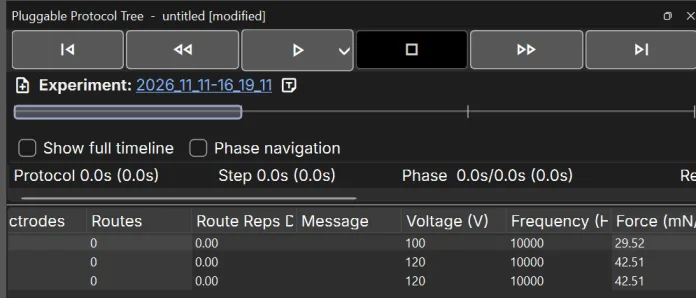
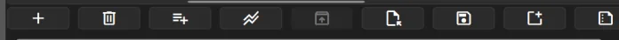

The Pluggable Protocol Tree pane is where you write a protocol down as a list of steps, group and
repeat them, set what each step does, and then run it: play, pause, step through, stop and recover when something goes
wrong.
Start with the short walkthrough. The rest is a reference: every button, column, timer and dialog, with what it is,
when to use it, how to read it and the value MicroDrop starts with. The short clips are real recordings and loop while
they are on screen; the three demos are live, change their settings and watch.
Quick walkthrough
From an empty protocol to a run you have paused, stepped and stopped. It assumes a chip is loaded in the
Device Viewer; the Getting Started tutorial covers that.
1Add a step and give it electrodes
Click Add step below selection under the tree, or press
Ctrl+Enter. A row called Step appears and is selected; the status bar reads
Editing: Step 1. Double-click its Name to rename it. Now click electrodes in the
Device Viewer, or draw a route there: they are written into the selected step's Electrodes and
Routes cells (the cells show how many).
Real clip. removes the last step, then
(ringed) adds a fresh one: watch its Electrodes cell read 0.
2Set its values, add a second step, fold them into a group
Double-click Duration (s), Voltage (V) and
Frequency (Hz) and type the values. The quickest second step is
Next Step (S) on the last step: it adds a copy of it.
Then select both rows (click, Shift-click), right-click ▸ Fold into Group (or
Ctrl+G) and set the new group's Reps to 3: both steps now run three
times.
Real clip. on the last step adds step 2 as a
copy; then the electrode the droplet should move onto is clicked, and the droplet follows (Realtime on).
3Change one column on many steps at once
Select the rows, right-click ▸ Bulk Set Values…, tick the column to change, choose the value
and click OK. Selecting a group changes the steps directly inside it; tick
Apply to all nested groups to reach steps in groups inside it too. See
Bulk Set Values.
Real clip. All nine steps selected and right-clicked: the menu, with the pointer on
Bulk Set Values…. Unfold Group is greyed because no group is
selected.
4Run, pause, step, stop
Click Play Protocol. The running step turns blue in the tree and
the Protocol, Step and Phase timers count. Click
the same button (now ) to pause; while paused,
/ (W /
S) move to another step and carries on from there.
(Ctrl+.) pauses and asks before ending the run.
Real clip. Stop (ringed) during a run: Play splits into the paused controls, the
Confirm question is answered Yes, the run ends and Generate Run Summary?
appears.
5Walk a step phase by phase
With nothing running, select a step that has a route and tick Phase navigation under the
timeline. and
appear beside Play (Ctrl+← / Ctrl+→), and a phase strip appears under the
timeline: click or drag it. With Realtime on, the droplet follows each phase.
Real clip.Phase navigation ticked in the pane (top), then the
phase strip under the timeline dragged: the Device Viewer's Phase: counter and the droplets follow.
6Fix what the dialogs report, then run again
If a protocol opens with Protocol has errors or Protocol warnings, read the list before you click
on; if a run stops with Protocol error, the dialog names the step and the column that failed. Fix that cell (or
the hardware it talks to) and press Play again. Errors and recovery lists every case.
The pane at a glance
Open it from View if it is hidden. Its title reads
Pluggable Protocol Tree - untitled until you save, with [modified] while there are unsaved
changes.

The top of the pane (the tree here is scrolled sideways to the hardware columns).
First Step · 2 Previous Step · 3 Play · 4 the arrow beside Play: Preview Mode · 5 Stop · 6 Next Step · 7 Last Step
Experiment line: new experiment, the experiment folder, new note
Status row: timers and counters; it scrolls sideways
The tree: one row per step or group, one column per setting (Columns)

Under the tree: the quick action buttons ① to ⑨, in the order of the quick actions table.
The row scrolls sideways when the pane is narrow.
Steps and groups
A protocol is a tree: steps run top to bottom, and a group holds steps (and other groups) so they can be
moved, copied and repeated together.
Step a row whose Type is step
One line of the protocol: which electrodes are on, which routes run, at what voltage and frequency, for how long.
What it is
A row whose Type cell reads step. Selecting it shows its electrodes and
routes in the Device Viewer, and clicks there are written into it.
When to use it
One step per thing the chip should do: dispense, move, mix, wait for the operator.
How to read it
The selected step is highlighted; during a run the running step is painted blue and the tree scrolls to
follow it. Grey cells are read-only.
Typical value
A new protocol starts with one step called Step. Press Esc in the tree (or click
empty space under the rows) to deselect: the Device Viewer goes back to free mode, where clicks are not saved into any
step.
Group a row whose Type is group
A folder of steps. Its Reps repeats everything inside it.
What it is
A row whose Type is group, with an arrow to fold its children away. Only
its Name and Reps mean anything; step-only cells are empty.
When to use it
For a block that repeats (wash three times), or to keep a long protocol readable.
How to read it
Its children are indented under it and numbered 1.1, 1.2… On the timeline, the steps
of each group share a tint.
Typical value
A new group is called Group, Reps 1, and is empty until you add or fold steps into it.
ID and Type ID and Type columns
Where the row sits, and what it is.
What it is
ID is the row's position, counted from 1, with a dot per level: 2.3 is the
third row inside the second top-level row. Type reads step or group. Both are
read-only.
How to read it
IDs renumber when rows are added, moved or deleted, so they are not permanent names. Errors and the
status bar name steps by ID (Step 1.2), so check the ID before you edit.
Typical value
1, 2, 3 … for a flat protocol.
Name Name column
Your label for the row.
What it is
Free text, shown in the tree, on the timeline cells, in Most Recent Step / Next Step and
in the run report.
When to use it
Always worth setting: Dispense, Mix and Wash read better than nine rows of
Step.
Typical value
Step for a new step, Group for a new group.
Message Message column
A note for the operator, shown before the step runs.
What it is
If filled in, the run pauses at the start of this step and shows a Message Prompt dialog with your
text and two buttons: Continue resumes the run, Stay Paused (or closing
the dialog) leaves it parked on this step.
When to use it
Anything a person must do mid-protocol: pipette, insert a chip, check a droplet.
How to read it
While the dialog is up, the step and phase timers are frozen. A step left parked can only be ended with
Stop.
Typical value
Empty: no pause.
Add, insert, copy, move and delete rows tree right-click menu and keys
Everything the tree's right-click menu does, and its keys.
Real clip. The right-click menu, top to bottom as in the table.
Runs only the selected rows. Greyed when the selection would run nothing (nothing selected, or only empty groups).
Add Step
On a group: a new step at the end of that group. On a step: a new step at the end of the step's own group (or of the protocol). On empty space: at the end of the protocol.
Add Group
The same, for a new empty group.
Insert Step Above
A new step directly above the row you right-clicked, then selects it. Greyed on empty space.
Insert Group Above
A new group directly above that row.
Fold into Group
Ctrl+G
Wraps the selected rows in a new group called Group, where the first of them was, and selects the group. The rows must share one parent; otherwise it is greyed.
Unfold Group
Ctrl+Shift+G
Dissolves the selected group (or the group of the selected step) and puts its rows where it was. Greyed for top-level steps or when the selection spans two groups.
Copy / Cut / Paste
Ctrl+C / X / V
Copy puts the selected rows (with groups' children) on the clipboard; Cut also removes them. Paste inserts them after the last selected row, inside a selected group at its end, or at the end of the protocol when nothing is selected. Pasted rows are new rows.
Bulk Set Values…
One value into one or more columns of every selected step: Bulk Set Values.
Fill Pattern…
Ctrl+Shift+F
A ramp or alternating values down a column: Fill Pattern.
Delete Selected Row(s)
Delete
Removes the selected rows, groups with everything in them. There is no confirmation, and no undo in the tree.
The menu does not open while a protocol runs, and the keys above do nothing then: the tree's structure is locked
during a run.
Build a sequence with Next Step Next Step on the last step
The fastest way to write a move-by-move sequence.
Select the last step and set up its electrodes.
Click Next Step or press S. On the last step it adds a
copy of the step below it (every column copied) and selects the copy.
In the copy, switch on the electrode the droplet moves onto and switch off the one it leaves. Repeat.
Use (W),
(A) and (D) to go back over what you wrote; the Device
Viewer shows each step.
Real clip (2× speed). Next and Previous Step clicked in turn: the timeline handle moves and the
droplet follows each step, because Realtime is on.
Columns
Each column is one setting of the step. Double-click a cell to edit it (on the Raspberry Pi
touchscreen: tap a cell of the selected row). Some columns come from other plugins and appear only when that plugin is
loaded, and several are hidden until you show them.
Show, hide and reorder columns right-click a column header; drag a header
Right-click any column header: a menu lists every column with a tick for the ones shown. Untick to hide, tick to
show. Drag a header sideways to move its column.
How to read it
Both choices are remembered across restarts. Hiding a column only hides it: its values stay in the steps
and are still applied when the protocol runs.
Typical value
Hidden at first: Trail Len, Trail Overlay,
Soft Start, Soft End, Lin Reps,
Lanes In, Lanes Out, In/Out,
Rot Lock, Re-centre, Check Droplets and
Volume Threshold %. The route ones are easier to set in the Device Viewer's
Execution Settings, which write the same values.
Reps Reps column (steps and groups)
How many times the whole row runs.
What it is
On a step, the step runs that many times in a row. On a group, everything inside runs that many times, in
order, and reps multiply: a step with Reps 2 in a group with Reps 3 runs 6 times.
When to use it
Repeating a block (wash cycles) without copying rows. For laps of a route inside one step use
Route Reps instead.
How to read it
While a repeated step runs, the status row shows Step Rep 2/3 (one counter per repeating
level), and Step Rep under the timeline jumps between repetitions.
Typical value
1 (1 to 1000).
Duration (s) Duration (s) column
How long each phase of the step is held.
What it is
A step without routes is one phase: its electrodes stay on for Duration seconds. A step with routes is
many phases, and each is held for Duration seconds, so the step takes phases × Duration.
When to use it
Longer for slow liquids or big electrodes; shorter for quick transport. The time the DropBot takes to
confirm each change comes on top.
Typical value
1.00 s (0 to 10000, two decimals).
Electrodes Electrodes column
The electrodes held on for the whole step.
What it is
Read-only here: the cell shows how many. Click electrodes in the Device Viewer while the step is selected
to change them.
How to read it
0 means the step switches nothing on by itself (it may still have routes).
Typical value
0 for a new step.
Routes Routes column
The paths a droplet is walked along during the step.
What it is
Read-only here: the cell counts the routes. Draw them in the Device Viewer while the step is selected.
A route that ends where it starts is a loop; any other route is a line.
How to read it
A step with routes runs as phases; several routes run side by side, phase for
phase.
Typical value
0.
Route Reps Route Reps column
How many laps the step's loop routes make.
What it is
Each loop runs this many laps, then one more phase brings the droplet back onto its start. A line runs
once unless Lin Reps is on. Route Reps × Reps is how often the routes play in all.
When to use it
Mixing: three laps of a loop is Route Reps 3.
How to read it
Its tooltip says which knob is in control. While Route Reps Dur is in
control, this cell shows how many full laps fit; editing it takes control back.
Typical value
1 (1 to 10000).
Route Reps Dur Route Reps Dur column
The other way to say how long loops run: in seconds instead of laps.
What it is
Typing a time asks Switch to Repeat Duration Control: Switch makes the
step run as many full laps as fit in that time and hold the droplet at the start for the rest, so the step takes exactly
that long. Setting it back to 0 asks Switch to Route Reps Control. Cancel keeps the old
value.
When to use it
When the step must last a fixed time (incubate while mixing for 60 s) whatever the loop length.
How to read it
While Route Reps is in control this cell shows the estimated step time instead. If the time is too short
for even one lap, the run asks Route-rep time expired (see Errors). Try both knobs
in the route timing demo.
Typical value
0.00 (Route Reps in control).
Trail Len and Trail Overlay Trail Len and Trail Overlay columns (hidden)
How many electrodes of a route are on at once, and how far the window moves each phase.
What it is
Trail Len electrodes are on together, sliding along the route.
Trail Overlay is how many of them the next phase keeps; the window moves Trail Len − Overlay
electrodes per phase, so the overlay can be at most Trail Len − 1.
When to use it
A longer trail for big droplets or slugs; overlay for smoother, smaller steps.
Typical value
Trail Len 1, Overlay 0 (one electrode, one electrode per phase). In the Device Viewer they are
Length and Overlay.
Soft Start and Soft End Soft Start and Soft End columns (hidden)
Gentle ramps at the ends of a route.
What it is
Soft Start adds phases that grow from 1 electrode to the full trail before the
route starts; Soft End adds phases that shrink it back at the end. Each adds Trail Len − 1
phases, so with a trail of 1 they change nothing.
Typical value
Off. The Device Viewer calls them Ramp Up and Ramp Dn.
Lin Reps Lin Reps column (hidden)
Whether lines repeat too.
What it is
With Lin Reps on, a route that is a line is replayed Route Reps times from its start. Off, a line runs
once whatever Route Reps says; loops always follow Route Reps.
Typical value
Off.
Rot Lock, In/Out, Re-centre, Lanes In and Lanes Out Rot Lock, In/Out, Re-centre, Lanes In, Lanes Out (hidden)
The shape of a wide trail (a slug) and how it turns corners.
What it is
Lanes In / Lanes Out add lanes beside the route, on the
inside / outside of each turn when In/Out is on (screen-left / screen-right of travel when off).
Rot Lock keeps the slug's starting orientation through corners instead of re-hanging behind its
head; Re-centre centres a locked slug on the route as it crosses its own heading.
When to use it
Moving large or elongated droplets that cover several electrodes.
Typical value
Lanes In 0, Lanes Out 0 (0 to 20): a plain one-electrode trail. In/Out, Rot Lock and Re-centre on. The
Device Viewer's Lanes slider and checkboxes set the same values.
Voltage (V) Voltage (V) column (DropBot)
The voltage this step drives the electrodes with.
What it is
Sent to the DropBot at the start of the step, before any electrode switches; the step waits for the
DropBot to confirm it (up to the ack wait). Editing a cell also makes it the starting value for
the next new step and the next session.
When to use it
Raise it where droplets move sluggishly; lower it where they split or stick.
Typical value
The voltage you last applied (whole volts, from 30 V up to the DropBot's limit, 140 V on most
boards).
Frequency (Hz) Frequency (Hz) column (DropBot)
The drive frequency for this step.
What it is
Sent with the voltage at the start of the step and confirmed the same way.
Typical value
The frequency you last applied, in whole hertz (from 100 Hz).
Force (mN/m) Force (mN/m) column (DropBot)
The pull this step's voltage gives, worked out from your capacitance calibration.
What it is
Read-only and never saved: it follows the step's voltage and the latest calibration in the Device
Viewer.
How to read it
Empty until both calibrations (filler and liquid) are measured. Doubling the voltage gives four times the
force.
Ask the DropBot, after the step, whether the droplets are where they should be.
What it is
After the step's phases, MicroDrop checks for liquid on the step's electrodes and on the last electrode
of each route. If any is missing, the run pauses with Droplet Detection Failed, listing
Expected, Detected and Missing channels: Continue carries on,
Stay Paused leaves the run paused for you to fix it and resume.
When to use it
After dispensing or splitting, where a lost droplet would spoil the rest of the run.
Typical value
Off. Skipped in Preview Mode; the check waits up to 12 s (its ack wait).
A percentage of the actuated electrodes' full (liquid-covered) capacitance. Each phase moves on as soon
as the measured capacitance reaches it. If it is not reached within the phase's Duration, the run pauses with
Volume Threshold Not Reached (see Errors).
When to use it
Slow or variable liquids, where a fixed Duration is either too short or wastes time.
How to read it
Needs a calibration and a loaded device; without them the column is skipped (it says so in the log).
Skipped in Preview Mode.
Typical value
0 = off (0 to 100).
Video and Record Video and Record columns
Camera on, and screen recording, per step.
What it is
Video ticked turns the live camera on for the step, unticked turns it off. A run
of ticked Record steps is recorded as one video into the experiment folder, starting at the first
and stopping at the first unticked step (or the end of the run).
How to read it
If a recording is already going when you press Play, MicroDrop asks Video Recording In
Progress: Continue stops it and lets the protocol make its own,
Cancel does not start the run.
Typical value
Both off.
Capture Capture, Capture At, Camera Lead (ms), Camera Settings columns
One picture per step, saved into the experiment folder.
What it is
Capture ticked takes a picture during the step; Capture At
says when (Step Start or Step End); Camera Lead (ms) keeps the camera on that
long before the picture so it can settle; Camera Settings shows the resolution the step captures
with, taken from the Device Viewer's camera panel while the step is selected (hover for the camera properties).
How to read it
The other three cells are blank and locked until Capture is ticked. The step waits until the picture is
on disk (up to its ack wait, 15 s).
Typical value
Capture off, Step Start, 0 ms (no lead), camera defaults.
Columns from other plugins columns from hardware plugins
Heater, magnet, fluorescence and Portable DropBot plugins add their own columns. They appear only while that plugin is
loaded, and they come and go when a plugin is added or removed through Manage Plugins. A protocol saved with such a column
and opened without the plugin reports it under Protocol has errors.
Bulk Set Values right-click ▸ Bulk Set Values…
Set one or more columns to the same value on many steps.
Select the rows: click, then Shift-click or Ctrl-click; selecting a group stands for its
steps.
Right-click ▸ Bulk Set Values…. The window lists every column you can set, each with a tick
box; the value box beside it is greyed until you tick it.
Tick the columns to change and choose their values (tick boxes such as Video read Off / On).
Tick Apply to all nested groups if steps in groups inside the selected groups should change
too; untick, only the steps directly inside change.
Click OK.
Read-only columns (ID, Type, Electrodes, Routes, Force) are not offered. Changing Route Reps Dur this way asks the
switch question once for all the rows.
Bulk Set Values
Tick the parameters to set and choose their values. They are applied to every selected step.
NameStep
Reps1
Duration (s)1.00
Voltage (V)120
VideoOff
Apply to all nested groups
OKCancel
Schematic (a few of the rows; the real list has one per settable column). No recording of this window
exists yet.
Fill Pattern toolbar, right-click ▸ Fill Pattern…, Ctrl+Shift+F
A ramp or an alternating set of values down a column.
Select the steps, then click under the tree, right-click ▸
Fill Pattern…, or press Ctrl+Shift+F in the tree.
Pick the Column, then Ramp (from / to) or
Alternate (a list of values).
Read the line under the values: it says what will happen, or why OK is greyed (a value out of
range, a ramp that starts and stops on the same value).
With one step selected it adds new copies after it instead; with none, after the last step.
Real clip (edited for length). Nine steps selected, Fill Pattern opened from the toolbar,
Column Voltage (V), Alternate 120, 125, OK: the Voltage column now
alternates.
Timing and repetition
Four numbers multiply: the protocol's Repeat Protocol, every enclosing
group's Reps, the step's own Reps, and the step's phases × Duration.
One set of switched-on electrodes, held for one Duration.
What it is
A step without routes is a single phase. A route is walked one phase at a time: with the default trail,
one phase per electrode. A loop adds one return phase after its last lap, so the droplet ends where it started. Routes
of the same step advance together; the step lasts as long as its longest route.
How to read it
The status row's Phase reads Phase 3/7 0.5s/1.0s (0.6s): phase 3 of 7,
0.5 s of its 1.0 s Duration done, 0.6 s on the clock including pauses.
Typical value
Line of 6 electrodes: 6 phases. Loop of 6 electrodes with Route Reps 2: 2 × 6 + 1 = 13 phases.
Reps, groups and total time try it
The protocol below has a group Wash holding two steps, then one more step. None of them has routes, so each
run of a step lasts its Duration. Change the numbers and watch the run order and the total.
Rules from the app: a group's Reps repeats its children in order; Run Selected Steps ignores the Reps of
groups outside the selection; Play from a selected step skips the rows before it only in the first repetition of
Repeat Protocol.
Route Reps or Route Reps Dur try it
One step with one route, the default trail of one electrode. Pick a loop or a line and compare counting laps with
giving a time.
Each box is one phase: numbers are the electrode along the route, ↺ the return phase, idle a phase
holding the loop's start, and hold the leftover time held at the end. Computed with the app's phase rules for a
trail of one electrode; the DropBot's confirmation time per phase is not included.
Repeat Protocol status row ▸ Repeat Protocol
Run the whole protocol several times in one go.
What it is
The box after Repeat Protocol: is how many times Play runs the protocol; the number
before it counts the ones finished (1/ 3).
When to use it
Repeating a complete experiment without making the tree longer.
How to read it
It also applies to Run Selected Steps. Starting from a selected step skips the earlier steps only in the
first repetition.
Typical value
1 (1 to 999).
Step repetition and phase repetition Step Rep and Phase Rep under the timeline
Two different kinds of repeat, with a jump box each.
What it is
A step repetition is one pass of a step that repeats through its own or a group's
Reps. A phase repetition is one lap of its routes through
Route Reps. When the selected or running step has more than one, Step Rep
(Jump to a step repetition) and Phase Rep (Jump to a phase repetition) appear
under the timeline, reading 2/3.
When to use it
Paused mid-way through laps or reps: pick another one to go straight to it.
How to read it
With Phase Rep showing, the phase strip shows one lap and the box says which lap. Both boxes hide while
Show full timeline is ticked.
Running a protocol
The transport buttons at the top of the pane work like a media player, and so does the timeline under them.
Transport buttons top of the pane
Hover a button to see its name and key. The keys work while the protocol pane (the tree included) has focus.
Icon
Tooltip
What it does
First Step (A)
Selects the first step. While paused, the run continues from there.
Previous Step (W)
Selects the step before; with nothing selected, the first.
Play Protocol
Runs from the selected step, or from the top when no step is selected. While running it becomes Pause.
Preview Protocol
Play while Preview Mode is ticked: the button turns yellow.
While paused, Play splits into these three: step a phase back or on, or carry on.
Stop Protocol (Ctrl+.)
Pauses, then asks Select YES to force finish protocol...: Yes ends the run, No leaves it paused. Greyed when nothing runs.
Next Step (S)
Selects the next step; on the last step (not while paused) adds a copy of it.
Last Step (D)
Selects the last step.
While a run is going, First, Previous, Next and Last are greyed; pause to use them. Play's tooltip reads just
Play Protocol, but Ctrl+R works for it too (see the caveat).
Try the buttons try it
A copy of the button row over a three-step protocol: Mix has a route of 4 phases and sits in a group with Reps
2. Click the buttons and watch which row and phase they move to.
Confirm Select YES to force finish protocol...
The running row is blue, the selected row tinted. Button states follow the app: idle, running and paused.
The run is slowed down to a phase every 0.7 s.
Starting a run Play button
Check the DropBot is connected, then select the step to start from, or press Esc to start at the top.
Click . If Realtime is off, MicroDrop turns it on for the run and off again
afterwards. If it is already on, it asks Keep Realtime Mode Enabled Post-Protocol?: Yes
leaves it on afterwards; tick Don't ask again to keep that answer (Protocol Settings can undo
it).
Preparing protocol run… covers the tree for the settling time, then the first step
runs.
If no step uses some columns, Protocol Columns Not Used lists them: their start and end actions are
skipped for this run. Click OK.
Real clip (one wait cut). Play pressed with Realtime on: the keep-Realtime question, Don't ask
again ticked, Yes, and the run starts.
While it runs tree, timers, Device Viewer
The running step is blue and the tree follows it; the Device Viewer shows its electrodes; the timers count. The tree's
rows cannot be added, moved or deleted, and cells cannot be edited, unless Edit ▸ Advanced Mode
is on: then cells (not rows) can be edited mid-run, and an edit to the running step is applied to the hardware at once.
Real clip. A run of one-phase steps: watch the blue row move down and Phase 1/1
count to its 1.0 s Duration.
Protocol, Step and Phase timers status row under the timeline
How long the run, the step and the phase have been going.
What it is
Each reads active (clock): the first number leaves out pauses, the one in brackets is clock time
including pauses. Phase also shows the phase number and its Duration target.
How to read it
Scroll the row sideways for the rest: Repeat Protocol,
Step 2/9 (which distinct step of how many), Step Rep 1/3 (only for repeating steps),
Most Recent Step and Next Step (hover a long name to scroll it).
Typical value
All 0.0s until the first run.
Timeline bar under the Experiment line
A seek bar: one cell per step, a handle on the current one.
What it is
Click a cell or drag the handle. When nothing runs this selects the step (the Device Viewer shows it).
While paused it moves the run there, so Resume carries on from that step. While running it only previews; the run goes on
with its own step at the next boundary.
How to read it
Steps in the same group share a tint. A second, thinner strip appears for the phases of the current
step while running, with Phase navigation, or for a step with several laps. The last cell of a step that loops for a fixed
time while waiting on a volume threshold is painted dark yellow: that is where it parks idle.
Real clip (3× speed). The timeline handle dragged along the steps while nothing runs: each
step is selected in turn and the droplet follows (Realtime on).
Show full timeline Show full timeline
Unroll every repetition on the timeline.
What it is
Ticked, the timeline has one cell per repetition of every step (a step with Reps 3 gets three cells), and
the phase strip shows every lap instead of one. Tooltip: Show every phase/step across all repetitions instead of a
collapsed base loop.
When to use it
To jump to, say, the second pass of a group while paused.
Step through the selected step's phases without running the protocol.
What it is
Ticked (only while nothing runs), and
appear around Play and the phase strip shows. It is the same switch as
Phases in the Device Viewer's Paths section: ticking either ticks both.
When to use it
Checking a new route move by move; with Realtime on the DropBot follows, so you can walk a droplet slowly
by hand.
How to read it
The Device Viewer shows Phase: 2/11; the pane's buttons grey out at the first and last phase.
Pressing Play turns it off.
Typical value
Off.
Real clip.Phases ticked in the Device Viewer (ringed, lower right)
also ticks Phase navigation in the pane (top); then the phase buttons step the route's head
along the loops and the counter follows.
Preview Mode arrow beside Play ▸ Preview Mode
A dry run that sends nothing to the hardware.
What it is
Click the small arrow beside Play and tick Preview Mode (Run the protocol
without sending any hardware messages (useful when no DropBot is connected)). Play turns yellow with
. The Device Viewer still shows every phase; voltage, frequency, droplet
checks and volume thresholds are skipped, and Realtime is left alone.
When to use it
Checking a new protocol's order and timing with no chip in.
How to read it
At the end, Preview Complete (Preview run completed successfully.) shows for 3 s.
Preview runs write no report and do not offer a new experiment. It cannot be changed during a run.
Typical value
Off.
Run Selected Steps right-click ▸ Run Selected Steps
Run only some rows, without changing the protocol.
What it is
Select rows, right-click ▸ Run Selected Steps. Each selected row runs with its own
Reps (a selected group repeats its children), but the Reps of groups around it are ignored: a step selected inside a group
with Reps 3 runs once. Repeat Protocol and Preview Mode apply as for Play.
When to use it
Re-running one wash, or testing a new step on its own.
How to read it
It is greyed when the selection would run nothing, and ignored while a run is going.
Experiment Experiment line
The folder where this session's data goes.
What it is
Captures, recordings, logs, the run report and a copy of every protocol you run go into the current
experiment folder. Click its name to open the folder; New Experiment
starts a new one; New Note adds a note to it.
How to read it
After a run that finished, MicroDrop asks Create New Experiment?. Then a report is built
(Generating Run Report...) and Run Summary Generated links to it; open older ones with
. Saving, opening and experiment files are covered in the Protocol Files &
Experiments tutorial.
Real clip (3× speed, waits cut). A run to the end, then Create New Experiment? and
Run Summary Generated.
Toolbar icons
The quick action buttons under the tree. They are greyed while a protocol runs. Their keys work while the
protocol pane has focus.
Quick actions under the tree
Icon
Tooltip
What it does
Add step below selection
Ctrl+Enter. After the selected step; inside a selected group, at its end; with nothing selected, at the end.
Delete last step
Ctrl+Backspace. Removes the protocol's last step (the deepest, last one), or a trailing empty group. To delete particular rows, select them and press Delete.
Add group
Ctrl+Shift+Enter. A new empty group, placed like Add step.
Fill a column with a ramp or alternating pattern (Ctrl+Shift+F)
Ctrl+Shift+I. Adds the top-level rows of a saved protocol into the one selected group. Greyed unless exactly one group is selected.
Open Protocol
Ctrl+O. Asks first if there are unsaved changes.
Save Protocol
Ctrl+S. Asks for a name the first time.
New protocol
Ctrl+N. Starts over with one default step.
Browse session reports
R. The run reports made since MicroDrop started.
Experiment icons Experiment line
Icon
Tooltip
What it does
New Experiment
Starts a new experiment folder; the name beside it changes.
New Note
Opens a sticky note saved in the current experiment.
Errors and recovery
What each dialog means and what to do. When a run ends for any reason, MicroDrop first switches all
electrodes off, then shows its dialogs.
Protocol has errors / Protocol warnings opening a protocol
Shown when a protocol is opened (or a legacy one imported) and something does not fit this setup.
What it is
Protocol has errors: some columns in the file have no plugin loaded here, so their values would be
dropped. OK opens it anyway without those columns; Cancel does not open it.
Protocol warnings: electrodes the protocol uses do not exist on the loaded device, or map to different channels
than when it was saved. Proceed anyway or Cancel.
How to read it
Expand the details for the column ids, or the electrodes and the step IDs that use them.
When to use it
Errors: load the missing plugin (Manage Plugins) and open again, unless you mean to drop those values.
Warnings: load the device the protocol was written for, or check the steps listed before running.
Protocol error during a run
A step could not be completed, so the run stopped.
What it is
The dialog names the step (Step 1.2 — “Mix”), the column that failed and why; the details hold the
technical trace. A common cause is a timeout: Timed out after 5.0s waiting for a reply… means the hardware did not
confirm in time.
When to use it
Read which step and column failed.
Check that device: connected, powered, not halted (the status bar icons).
If it is slow rather than absent, raise that column's wait in Column Ack Wait Times.
After the dialog, MicroDrop asks Generate Run Summary?: Yes keeps a report of the
part that ran.
Select the failed step and press Play to carry on from there, or use Run Selected Steps for just the rest.
Generate Run Summary? after Stop
Protocol was stopped before completion. Press YES to create run summary. Shown after Stop or an error when
some steps already ran (not in Preview Mode). No saves the data files without the report.
Continue resumes; Stay Paused parks the step (only Stop gets out).
Droplet Detection Failed
Check Droplets found channels missing, or the DropBot reported an error.
Continue goes on; Stay Paused leaves the run paused: fix the droplet, then Resume.
Volume Threshold Not Reached
The threshold was not met within the phase's Duration.
Set Extend time by: (5 s) and/or Change coverage to:, then Apply & retry; Proceed anyway; Rewind (steps without Route Reps Dur) finds the droplet and goes back to that phase; Pause Protocol. Closing it proceeds.
Route-rep time expired
Route Reps Dur ran out before the route was back at its start.
Complete finishes the loop then moves on; Skip goes to the next step now; Pause lets you decide.
Loop needs more time
After a seek, the current loop cannot finish within Route Reps Dur.
Yes finishes the loop and moves on; No stays paused.
Leave idle phase?
Paused on the idle (parking) phase of a fixed-time loop and seeking to another phase.
Yes seeks; No stays.
Other questions before and after runs
Unsaved Protocol Changes: New, Open or exit with unsaved edits; No goes back so you
can save.
Protocol File Not Found: the open protocol's file was deleted; the same choice.
Unsaved Free Mode Changes: you changed electrodes or routes with no step selected;
Insert as New Step keeps them as a step, Discard Changes drops them.
Switch to Repeat Duration Control / Switch to Route Reps Control: see
Route Reps Dur.
Run Summary Failed: the report could not be built; the run's data files were still saved.
Settings
In the preferences window, tab Protocol Settings.
Realtime Mode Pre-Protocol (s) and Logs Accepted Post-Protocol (s) Protocol Settling Times
Two waits around every run.
What it is
Realtime Mode Pre-Protocol: how long the hardware is given to settle after
Realtime is switched on, before the first step (the Preparing protocol run… screen).
Logs Accepted Post-Protocol: how long readings still arriving after the run are added to its log
before the report is built.
When to use it
Raise the first if the first step misbehaves; the second if the report misses the last readings.
Typical value
1.0 s and 3.0 s (0.5 to 15 s).
Prompt to keep Realtime Mode? and Keep Realtime Mode active? Realtime Mode Persistence
What happens to Realtime after a run that started with it on.
What it is
With Prompt to keep Realtime Mode? ticked, Play asks each time. Unticked, the
answer is Keep Realtime Mode active?. Ticking Don't ask again in the question sets both.
Typical value
Both on. A run that started with Realtime off always switches it off again.
Unused columns notice Dialog Settings
The tick box in Dialog Settings hides the Protocol Columns Not Used notice; it is set by
the notice's Do not show again. Untick it to see the notice again.
Typical value
Off (the notice shows).
Column Ack Wait Times Column Ack Wait Times (0 = don't wait)
How long a step waits for the hardware to confirm each column's action.
What it is
A table: Column and Wait Time (s). 0 means do not wait
(send and carry on); ∞ (wait forever) never times out. When a wait runs out, the run stops with a
Protocol error.
When to use it
Raise one when a slow device keeps timing out; never set 0 for a step whose result the next step depends
on.
Typical value
Electrodes / Routes 5.0, Voltage (V) 5.0, Frequency (Hz) 5.0, Check Droplets 12.0, Capture 15.0;
hardware plugins add their own rows.
The allowed range and starting value of voltage and frequency.
What it is
Six boxes: Min Voltage (V), Max Voltage (V),
Default Voltage (V), and the same for frequency in Hz. The voltage and frequency boxes elsewhere in
MicroDrop follow the range at once.
When to use it
Narrow the range for a chip that cannot take the full voltage.
Caveats
Ctrl+R has two jobs, and in the tree it does neither. In the pane it is Play /
Resume; in the tree it is also bound to Run Selected Steps. While the tree has focus the two bindings clash and the key
does nothing. Click a button first (or use the Play button and the right-click menu).
Reps multiply. A group's Reps repeats everything inside it, groups inside groups multiply again, and
Repeat Protocol multiplies the lot. Check the total with the demo before a long run.
Route Reps Dur wins over Route Reps once you accept the switch, until you set it back to 0 or edit
Route Reps.
Hidden columns still apply. A value in a hidden column (a trail length, Check Droplets) still runs;
show it with a header right-click.
Hardware columns come with their plugin. Voltage, Frequency, Force, Check Droplets, Volume Threshold,
Video, Record, Capture, heater, magnet and fluorescence columns appear only when their plugin is loaded.
No undo in the tree. Delete and Cut cannot be taken back; save first, or copy the rows elsewhere.
Next Step on the last step adds a step. Use Last Step to just go to the end.
Preview runs skip the hardware columns, so they say nothing about whether voltages or droplet checks
will work.
Glossary
Protocol
The list of steps the tree holds, saved as a .json file.
Step
One row that does something on the chip for a time.
Group
A row that holds other rows so they move and repeat together.
Route
A path drawn in the Device Viewer that a droplet is walked along. A loop ends where it starts.
Phase
One set of switched-on electrodes, held for one Duration.
Lap
One trip around a loop route.
Trail
The electrodes of a route that are on at the same moment.
Slug
A trail more than one electrode wide.
Realtime
When on, the DropBot powers what MicroDrop shows, as it changes.
Free mode
No step selected: clicks in the Device Viewer are not saved into the protocol.
Ack wait
How long a step waits for the hardware to confirm an action.
Experiment
The folder a session's captures, logs and reports go into.